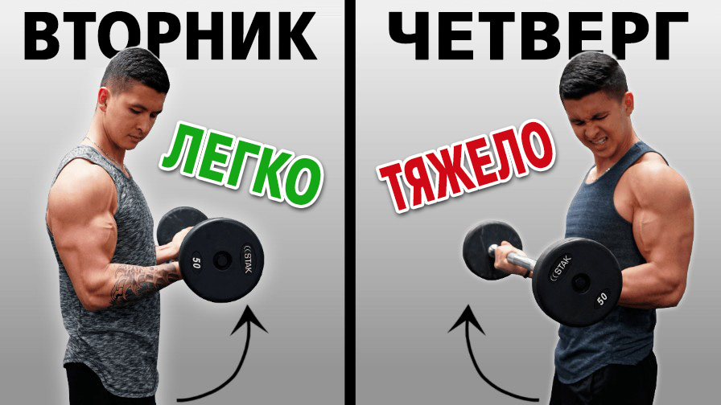

[title]
[text] [text]
Подробнее
[text]
Подробнее
Отжимания на брусьях для роста силы и массы. Как правильно накачать трицепс, грудь и плечи
Отжимания на брусьях отличное упражнение для роста силы и массы. Но как правильно накачать трицепс, грудь и плечи знают не все. Отжимания на брусьях – это базовое жимовое упражнение, которое задействует большое количество мышц верхней части тела. Вместе с тем, это немного противоречивое упражнение, потому что оно может отрицательно сказаться на плечах, если ты не будешь шаг за шагом подготавливать к нему свое тело. Когда ты опускаешься вниз, руки уходят назад, и это может сильно перенапрягать плечи. Но, как и со многими другими упражнениями, многое зависит от техники выполнения и уровня подготовки. Для правильного выполнения избегай таких ошибок. Давай начнем с правильной стартовой позиции. Опусти лопатки вниз, чтобы создать необходимое напряжение. Тебе также следует обратить внимание на положение локтя. Выпрями руки, но не чрезмерно. Избегай расслабленного положения в суставе и сохраняй напряжение.
Следующая ошибка – это малая амплитуда движения.
Выполняя отжимания на брусьях, тебе нужно сгибать руки в локтях минимум на 90 градусов. Конечно, можешь опускаться ниже, если у тебя достаточно подвижности в плечах. Но спешить с этим не стоит. Потому что, если тебе не хватает гибкости и опыта, есть вероятность получить травму в краткосрочной или долгосрочной перспективе.
Подробнее
Для правильного выполнения избегай таких ошибок. Давай начнем с правильной стартовой позиции. Опусти лопатки вниз, чтобы создать необходимое напряжение. Тебе также следует обратить внимание на положение локтя. Выпрями руки, но не чрезмерно. Избегай расслабленного положения в суставе и сохраняй напряжение.
Следующая ошибка – это малая амплитуда движения.
Выполняя отжимания на брусьях, тебе нужно сгибать руки в локтях минимум на 90 градусов. Конечно, можешь опускаться ниже, если у тебя достаточно подвижности в плечах. Но спешить с этим не стоит. Потому что, если тебе не хватает гибкости и опыта, есть вероятность получить травму в краткосрочной или долгосрочной перспективе.
Подробнее
Как накачать большие руки быстрее. Ускоряем рост бицепса и трицепса
Если ты такой же как я, то скорее всего, одна из причин, по которой ты впервые начал поднимать тяжести, заключалась в том, чтобы накачать большие, мощные руки, как в кино. И я не собираюсь упрекать тебя. Так как руки являются одной из первых частей тела, которую замечают и она может значительно приукрасить твое телосложение. Но также ты, вероятно, пришел к пониманию, что строительство больших рук - непростая затея. Это очень медленный процесс, и большинство людей осознают это. Даже если правильно подобраны упражнения и проводить все тренировки правильно, часто может казаться, что руки растут мучительно медленно. Однако, если ты действительно заинтересован максимизировать рост своих рук, то, к счастью, есть несколько тренировочных стратегий, которые, как показывают исследования, способны значительно ускорить процесс. И в этом видео именно об этом я и расскажу. Чтобы ты мог создать большие, выглядящие более мощно руки как можно быстрее. Первый шаг, который нужно сделать, это убедиться, что ты выполняешь достаточный объем. Так как мы знаем, что есть определенная связь между еженедельным объемом и ростом мышц. Так что если ты в росте рук не увидел результатов, на которые рассчитывал, тогда увеличение количества еженедельных подходов, которые нацелены на тренировку рук, может быть решением.
Иллюстрирует это статья 2019 года. У тренированных мужчин сравнивали результаты выполнения 6, 18 и 30 еженедельных подходов на бицепс и трицепс. Через восемь недель они обнаружили, что есть ощутимая зависимость роста бицепса от количества еженедельных подходов. Аналогичные тенденции наблюдали также и с трицепсом.
Подробнее
И в этом видео именно об этом я и расскажу. Чтобы ты мог создать большие, выглядящие более мощно руки как можно быстрее. Первый шаг, который нужно сделать, это убедиться, что ты выполняешь достаточный объем. Так как мы знаем, что есть определенная связь между еженедельным объемом и ростом мышц. Так что если ты в росте рук не увидел результатов, на которые рассчитывал, тогда увеличение количества еженедельных подходов, которые нацелены на тренировку рук, может быть решением.
Иллюстрирует это статья 2019 года. У тренированных мужчин сравнивали результаты выполнения 6, 18 и 30 еженедельных подходов на бицепс и трицепс. Через восемь недель они обнаружили, что есть ощутимая зависимость роста бицепса от количества еженедельных подходов. Аналогичные тенденции наблюдали также и с трицепсом.
Подробнее
Подтягивания для роста силы и массы. Как накачать широкую спину и бицепс на турнике
Подтягивания – одно из лучших упражнений для наращивания мышечной массы среди существующих, и должны быть обязательно включены в план любой силовой тренировки. Чтобы улучшить подтягивания, мы дадим тебе 3 простых совета, чтобы получать от этого упражнения максимальный эффект. Наибольшая сила в подтягиваниях идет от спины, а не от рук. Поэтому, прежде чем согнуть руки в локтях и тянуть себя вверх, ты должен активировать мышцы спины. Для этого необходимо понимать разницу между пассивным и активным висом. В пассивном висе ты просто висишь на перекладине с выпрямленными руками и почти не задействуешь мышцы спины. В активном висе ты опускаешь лопатки вниз и сводишь вместе. Другими словами оттягиваешь вниз и сокращаешь. В обоих положениях локти не сгибаешь. Совсем. В пассивном висе основное внимание уделяется силе хвата. Также можно хорошо растянуть широчайшие и грудные мышцы, улучшая подвижность плечей. В активном висе активируем широчайшие мышцы спины, трапецию и ромбовидные. Поэтому первое, что нужно сделать, когда начинаешь подтягивание – перейти в положение активного виса.
Чтобы начать движение используй только лопатки, не сгибая рук. Это важно. Так задействуешь намного больше мышц спины и сохранишь крепкие и здоровые плечи. Ты можешь выполнять подтягивания с переключением активного и пассивного виса в каждом повторении. Такое выполнение очень хорошо для изучения правильной техники. Но ты также можешь держать активный вис на протяжении всего подхода. Вне зависимости от того, какой вариант ты выберешь, всегда полностью выпрямляй руки, опускаясь в нижнее положение.
Подробнее
В обоих положениях локти не сгибаешь. Совсем. В пассивном висе основное внимание уделяется силе хвата. Также можно хорошо растянуть широчайшие и грудные мышцы, улучшая подвижность плечей. В активном висе активируем широчайшие мышцы спины, трапецию и ромбовидные. Поэтому первое, что нужно сделать, когда начинаешь подтягивание – перейти в положение активного виса.
Чтобы начать движение используй только лопатки, не сгибая рук. Это важно. Так задействуешь намного больше мышц спины и сохранишь крепкие и здоровые плечи. Ты можешь выполнять подтягивания с переключением активного и пассивного виса в каждом повторении. Такое выполнение очень хорошо для изучения правильной техники. Но ты также можешь держать активный вис на протяжении всего подхода. Вне зависимости от того, какой вариант ты выберешь, всегда полностью выпрямляй руки, опускаясь в нижнее положение.
Подробнее
Как стабильно набирать мышечную массу? Что мешает тренироваться лучше и растить мышцы быстрее?
У нас у всех есть дни, когда самочувствие на тренировках отличное. Когда рабочие веса будто стали легче, и ты можешь поднять больше и сделать больше повторений, чем раньше. И наоборот, я думаю, у всех бывают дни тренировок, когда всё просто кажется тяжелее, чем обычно. И приходиться бороться за цифры, которые ты считал нормой для себя. Вместо простого игнорирования такой тренировки, считая её неудачной или предположения, что ты потерял мышечную массу, ты должен понять, что есть несколько причин, на которые указывают исследования. Они способны объяснить, почему работа, которую ты выполняешь, внезапно стала ощущаться тяжелее. И с учетом этих факторов, ты сможешь стабильно тренироваться лучше и, следовательно, добиваться большего прогресса.  Итак, не будем тянуть, начнем с первого фактора. Водный баланс. Убедись, что ты потребляешь достаточное количество воды до и в течение тренировки. Это очень важно для максимальной производительности. Исследования показали, что снижение физической работоспособности, включая снижение мотивации и ощущение осложнений при выполнении усилий, наблюдается при обезвоживании всего лишь на 2%. На самом деле, эта статья 2001 года из журнала «Исследования силы и кондиций» наглядно иллюстрирует важность этого вопроса. Исследователи взяли тренированных мужчин и дали задание выполнить жим лёжа на одноповторный максимум. При этом водный баланс у них был в норме. Затем, повторили то же самое, когда испытуемые находились в слегка обезвоженном состоянии. Это привело к снижению одноповторного максимума на 7 килограмм. Затем, испытуемые выпивали достаточное количество воды, и теперь они могли более или менее выполнить то, на что были способны изначально. ПодробнееКак ускорить рост мышц? Как нарастить мышечную массу как можно быстрее? 3 совета Джереми Этье
Большинство из нас хотят нарастить мышечную массу как можно быстрее. Но в отличие от кино, наращивание мышечной массы часто разочаровывает. Ведь является мучительно медленным процессом, из-за чего сложно определить, действительно ли вы прогрессируете. И, к сожалению, этот процесс лишь замедляется по мере того, как вы получаете больше опыта. Например, эта модель, разработанная исследователем Аланом Арагоном, примерно показывает, какое максимальное количество мышц вы можете набирать в месяц: Так, к примеру, новичок в 140 фунтов (весом 63,5кг) может набрать около 1,5-2 фунтов (0,5-0,9 кг) мышц в месяц в первый год правильных тренировок. Переходим на средний уровень (72,6кг) и все замедляется (0,27-0,7кг). Переходим на следующий уровень в категорию продвинутых (77 кг), и все замедляется еще сильнее. До такой степени, что физические изменения станут почти незаметными (0,18-0,36кг). И имейте в виду, что эти показатели предполагают, что из месяца в месяц вы делаете все оптимально и последовательно с точки зрения и тренировок и питания. Поскольку это нереально для большинства людей, вы можете ожидать, что скорость роста мышц будет даже ниже, чем было сказано ранее.
Итак, как вы можете видеть, рост мышц - это медленный процесс, но со временем он действительно приводит к большим физическим изменениям, если вы продолжаете идти к своей цели. И, к счастью, литература советует несколько вещей, которые можно сделать и убедиться, что вы действительно прогрессируете и наращиваете мышцы так быстро, на сколько ваше тело способно. Это именно то, что мы рассмотрим в этом видео.
1) Самое важное, что вы можете сделать в тренажерном зале, чтобы вырасти как можно быстрее, - это применять концепцию прогрессирующей нагрузки. Чтобы гарантированно стать сильнее со временем.
Например, группа японских исследователей дала задание испытуемым мужчинам делать только жим лежа. Три раза в неделю, в течение шести месяцев. И, как мы видим... (см. видео) Они наблюдали увеличение размера мышц груди и трицепсов недели за неделей. Что, казалось, хорошо соотносится с их прогрессирующим увеличением силы в жиме лежа.
Подробнее
Поскольку это нереально для большинства людей, вы можете ожидать, что скорость роста мышц будет даже ниже, чем было сказано ранее.
Итак, как вы можете видеть, рост мышц - это медленный процесс, но со временем он действительно приводит к большим физическим изменениям, если вы продолжаете идти к своей цели. И, к счастью, литература советует несколько вещей, которые можно сделать и убедиться, что вы действительно прогрессируете и наращиваете мышцы так быстро, на сколько ваше тело способно. Это именно то, что мы рассмотрим в этом видео.
1) Самое важное, что вы можете сделать в тренажерном зале, чтобы вырасти как можно быстрее, - это применять концепцию прогрессирующей нагрузки. Чтобы гарантированно стать сильнее со временем.
Например, группа японских исследователей дала задание испытуемым мужчинам делать только жим лежа. Три раза в неделю, в течение шести месяцев. И, как мы видим... (см. видео) Они наблюдали увеличение размера мышц груди и трицепсов недели за неделей. Что, казалось, хорошо соотносится с их прогрессирующим увеличением силы в жиме лежа.
Подробнее
Легкие или тяжелые веса? От чего растут мышцы лучше? Исследования от Джереми Этье
Легкие или тяжелые веса? От чего растут мышцы лучше? Как тренироваться? Джереми Этье детально рассматривает этот вопрос. Ронни Коулман: «Каждый хочет быть бодибилдером. Но никто не хочет поднимать большие веса. Простая истина убеждает нас в том, что много повторений и легкие веса развивают мышечную выносливость и мало способствуют увеличению мышечной массы. Вместе с тем, более тяжелые веса с низким и средним числом повторений, долгое время считались лучшим способом максимизировать мышечный рост. Так ли это? На самом деле, многие из вас, вероятно, знакомы с таблицей, показывающей, что переход от умеренных весов к тяжелым ведет от большей гипертрофии к развитию силы. В то время как более легкие нагрузки приводят к росту мышечной выносливости с меньшим вкладом в гипертрофию.
Основываясь на этом можно решить, что лучше тренироваться с большими весами. И что это и есть лучшее решение с точки зрения гипертрофии.
Но чтобы определить, перспективно это утверждение или нет, давайте взглянем на исследования «тяжелых» и «легких весов». И определим, какой подход является более оптимальным с точки зрения роста мышц.
Подробнее
На самом деле, многие из вас, вероятно, знакомы с таблицей, показывающей, что переход от умеренных весов к тяжелым ведет от большей гипертрофии к развитию силы. В то время как более легкие нагрузки приводят к росту мышечной выносливости с меньшим вкладом в гипертрофию.
Основываясь на этом можно решить, что лучше тренироваться с большими весами. И что это и есть лучшее решение с точки зрения гипертрофии.
Но чтобы определить, перспективно это утверждение или нет, давайте взглянем на исследования «тяжелых» и «легких весов». И определим, какой подход является более оптимальным с точки зрения роста мышц.
Подробнее
Что такое Бро-сплит? По какому принципу строится "bro split" тренировочная программа
Что такое Бро-сплит? «Bro split» - один из методов тренинга в классическом бодибилдинге. Он был очень популярен на протяжении десятилетий и до сих пор остается широко используемым методом среди тех, кто стремится набрать мышечную массу. По сути, типичный «бро сплит» включает в себя проработку каждой отдельной группы мышц один раз в неделю в течение 4-6 тренировок. ПодробнееДроп-сеты или обычные подходы? Какой метод тренировки лучше для роста мышц?
Дроп-сеты или обычные подходы. Что лучше подходит для набора мышечной массы? Когда возникает вопрос "как выйти на максимум мышечного роста". Спортсмен начинает пробовать различные методики. Один из популярных методов тренинга Дроп-сет (не путайте с суперсет). Сразу после завершения рабочего подхода, делаешь один или несколько сетов с меньшим весом. Таким образом, выполняется больший тренировочный объем за короткое время. Достигается более мощный памп, повышается метаболический стресс. Теоретически, это должно ускорить рост. Ведь метаболический стресс это один из драйверов мышечного роста. Однако, недавнее исследование выявило, что метаболический стресс не на столько важен для роста мышц, как мы ранее предполагали.
И напрашивается вопрос: «Есть ли вообще смысл включать дроп сеты в свои тренировки?» Или просто делать больше подходов с рабочим весом. И отдыхать как следует между ними. Не будем гадать. Давайте выясним.
К счастью, есть парочка исследований, которые помогут пролить свет на этот вопрос. Например, одна свежая статья 2017 года. Сравнивает эффективность дропсета и нормальных подходов. Для роста силы и мышц в объеме. При жимах на трицепс в блочном тренажере.
Первая группа выполняла один тяжелый подход на 12 повторений, а затем сразу же добивала трицепс двумя подходами с меньшим весом до отказа. В то время как вторая группа просто выполнила три тяжелых сета по 12 повторений с перерывами на отдых.
В результате, несмотря на то, что первая группа тратила в половину меньше времени, выполняя такой же объеме работы. Через 6 недель прирост у первой группы делавшей дроп-сеты (помните, что это не суперсет) оказался в двое выше по сравнению с теми, кто работал по классике.
Подробнее
Однако, недавнее исследование выявило, что метаболический стресс не на столько важен для роста мышц, как мы ранее предполагали.
И напрашивается вопрос: «Есть ли вообще смысл включать дроп сеты в свои тренировки?» Или просто делать больше подходов с рабочим весом. И отдыхать как следует между ними. Не будем гадать. Давайте выясним.
К счастью, есть парочка исследований, которые помогут пролить свет на этот вопрос. Например, одна свежая статья 2017 года. Сравнивает эффективность дропсета и нормальных подходов. Для роста силы и мышц в объеме. При жимах на трицепс в блочном тренажере.
Первая группа выполняла один тяжелый подход на 12 повторений, а затем сразу же добивала трицепс двумя подходами с меньшим весом до отказа. В то время как вторая группа просто выполнила три тяжелых сета по 12 повторений с перерывами на отдых.
В результате, несмотря на то, что первая группа тратила в половину меньше времени, выполняя такой же объеме работы. Через 6 недель прирост у первой группы делавшей дроп-сеты (помните, что это не суперсет) оказался в двое выше по сравнению с теми, кто работал по классике.
Подробнее
Как часто тренировать мышцы? Оптимальная частота тренировки мышц для набора массы и развития силы
Джереми Этье, опираясь на научные исследования, подробно рассматривает вопросы: Как часто тренировать мышцы? Оптимальная частота тренировки мышц для набора массы и развития силы. Одна из самых обсуждаемых тем в фитнес-индустрии это частота тренировок. А точнее, как часто нужно тренировать каждую группу мышц в неделю. С одной стороны есть те, кто считают, что необходимо тренировать всего один раз в неделю. Тогда как другие предпочитают более высокочастотный подход. Для примера, опрос 2013 года среди 127 конкурентоспособных бодибилдеров показал, что 69 процентов респондентов тренируют каждую группу мышц один раз в неделю в то время как остальные 31% тренируют мышцы дважды в неделю или более часто. Хотя и очевидно, что вы увидите результаты независимо от того, какую частоту тренировок вы используете. Вопрос в том, что оптимально. И чтобы понять это, мы должны посмотреть на исследование. К счастью, Брэд Шенфельд недавно опубликовал мета-анализ 2016 года именно по этой теме, в котором собрали десять различных исследований и сравнили тренировку каждой мышцы один раз в неделю. С тренировкой каждой мышцы с более высокой частотой. Два или три раза в неделю. И проанализировал влияние на рост мышц.
Каждое исследование показало пользу более частых тренировок у бодибилдеров. Фактически тренировка каждой мышцы два или три раза в неделю привела к увеличению мышечной массы на 3,1% больше, чем тренировки каждой мышцы раз в неделю. Так как общий объем работы, количество упражнений и время отдыха были приравнены для всех исследований, взятых для этого анализа, вполне вероятно, что разница в частоте тренировок действительно является причиной увеличения (набора) мышечной массы. На целых три процента.
Подробнее
И чтобы понять это, мы должны посмотреть на исследование. К счастью, Брэд Шенфельд недавно опубликовал мета-анализ 2016 года именно по этой теме, в котором собрали десять различных исследований и сравнили тренировку каждой мышцы один раз в неделю. С тренировкой каждой мышцы с более высокой частотой. Два или три раза в неделю. И проанализировал влияние на рост мышц.
Каждое исследование показало пользу более частых тренировок у бодибилдеров. Фактически тренировка каждой мышцы два или три раза в неделю привела к увеличению мышечной массы на 3,1% больше, чем тренировки каждой мышцы раз в неделю. Так как общий объем работы, количество упражнений и время отдыха были приравнены для всех исследований, взятых для этого анализа, вполне вероятно, что разница в частоте тренировок действительно является причиной увеличения (набора) мышечной массы. На целых три процента.
Подробнее
Youtube-канал "Масса" / Политика в отношении комментариев